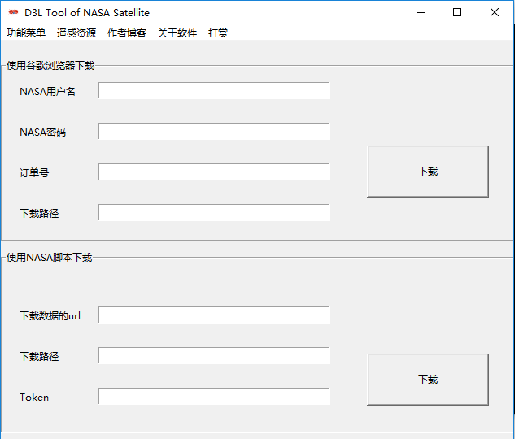

D3L Tool of NASA Satellite 1.0 介绍
NASA卫星的D3L工具是一款免费的软件工具，可以轻松下载NASA卫星数据。
NASA卫星的D3L工具是由戴先生开发的. 该软件提供了一个图形界面来下载来自美国NASA的卫星影像，如MODIS产品，MERIS等。 由于NASA新的政策，LAADS FTP服务器（包括公共和私人）将于2018年4月20日星期一关闭。美国NASA提供了一些下载脚本，但对于一些不使用python的人来说有点困难。 所以我开发了NASA的D3L工具。
主界面

D3L Tool of NASA Satellite在Windows上运行。
开始D3L Tool of NASA Satellite的操作
完整的软件包括五个文件，如下图所示。

双击D3LToolNASA.exe同时开始你的NASA卫星影像下载之旅吧。
D3L Tool of NASA Satellite引用的相关的软件
D3L Tool of NASA Satellite是根据MIT许可发布的。 它建立在几个开源库和源代码文件上。 以下是关键项目清单。
tkinter Cross-Platform GUI Library, version 8.5. License: BSD-style License. Authors: Many. Links: http://www.tcl.tk
selenium Libraries, version 3.4.3. Authors: Many. License: Apache 2.0 License. Links: https://www.seleniumhq.org/
Pyinstaller Library, version 3.3. Authors: Gordon McMillan and William Caban. License: GPL license. Links: http://www.pyinstaller.org/
laads-data-download.py source code. Author: Tristan Quaife. License: Use laads-data-download.py in included source files. Links: https://ladsweb.modaps.eosdis.nasa.gov/tools-and-services/data-download-scripts/#python
致谢
D3L Tool of NASA Satellite的开发得到了Tristan Quaife, MorvanZhou与NASA的帮助。特别感谢GeoDa。
技术支持
我们正在更新主页 来反映D3L Tool of NASA Satellite 1.0的功能。
许可
D3L Tool of NASA Satellite使用MIT许可。
联系方式
有问题？请联系我们.